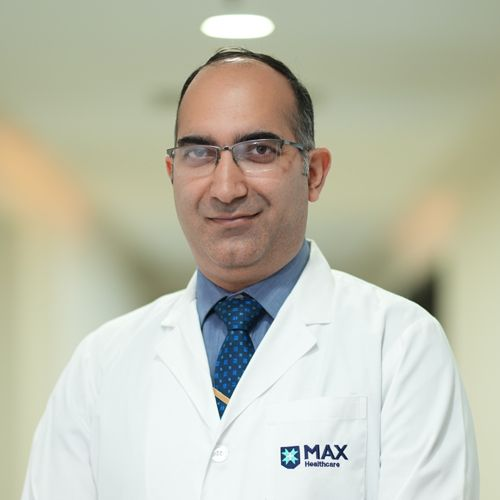

MAX Healthcare shifoxonasining tibbiy onkologi Dr. Atul Sharma bilan tashxis, davolash rejasi va zamonaviy terapiya usullari bo'yicha maslahat oling — UniMed Travel Telegram kanali orqali.

Hozirda shu shifoxonada faoliyat yuritadi.
2019–2022: tibbiy onkologiya bo'yicha maslahatchi shifokor (Attending Consultant).
2014–2018: tibbiy onkologiya bo'limida katta rezident (Senior Resident).
2013–2014: katta rezident.
2025-yil, Buyuk Britaniya.
2024-yil, Milliy tibbiyot fanlari akademiyasi a'zoligi.
2019-yil, Milliy kengash doktori.
2018-yil, AIIMS, Nyu-Dehli.
2018-yil, Yevropa va Buyuk Britaniya tibbiy onkologiya sertifikatlari.
2012-yil, Jammu davlat tibbiyot kolleji.
2007-yil, Jammu davlat tibbiyot kolleji.
Xalqaro a'zoligi: ASCO (Amerika Klinik Onkologiya Jamiyati), ESMO (Yevropa Tibbiy Onkologiya Jamiyati), ISMPO va ISO (Hindiston Onkologiya Jamiyatlari).
UniMed Travel jamoasidan qisqa tushuntirish: Hindistonning yetakchi onkologik markazlari va bu yerda saraton kasalligini davolash imkoniyatlari haqida.
Dr. Atul Sharma bilan bog'lanish uchun UniMed Travel Telegram kanaliga qo'shiling va tibbiy hujjatlaringizni yuboring.